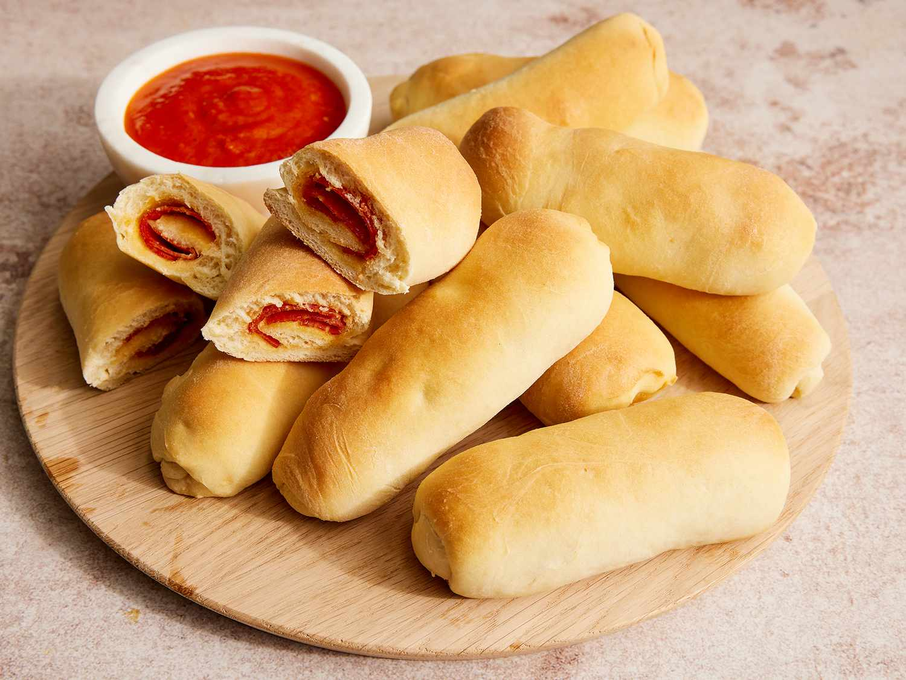

Pepperoni Rolls

Description
West Virginia pepperoni rolls are a classic Appalachian snack, consisting of soft, yeasty rolls filled with slices of pepperoni.
Originating from the coal mines of West Virginia in the early 20th century, these rolls were a convenient and filling meal for miners.
Ingredients
For the dough:
- 1 pkg (2 1/4 tsp.) active dry yeast
- 1 c. warm water (110°F or 41°C)
- 1 tbsp. gradulated sugar
- 1 tsp. salt
- 2 tbsp. vegetable oil
- 3 c. all-purpose flour, plus extra for dusting
For the filling:
- 1 lb. sliced pepperoni
- 2 c. shredded mozzarella cheese (optional)
Steps
- Activate the Yeast: In a small bowl, combine the warm water, sugar, and yeast.
Let it sit for about 5-10 minutes until it becomes foamy.
- Make the Dough: In a large mixing bowl, combine the activated yeast mixture, salt, oil, and 3 cups of flour. Stir until the dough comes together.
Turn the dough out onto a lightly floured surface and knead for about 5-7 minutes, or until it becomes smooth and elastic.
(optional: use stand mixture with dough hook attachment)
- First Rise: Place the dough in a greased bowl, cover it with a clean kitchen towel, and let it rise in a warm place for about an hour, or until it doubles in size.
- Preheat your oven to 375°F (190°C). Line baking sheets with parchment paper or grease them lightly.
- Punch down the risen dough and divide it into 24 equal portions. Roll each portion into a ball, then flatten it into a small circle.
- Place a few slices of pepperoni and a sprinkle of shredded mozzarella cheese onto each circle of dough. Fold the dough over the filling and pinch the edges to seal.
- Arrange the filled rolls seam-side down on the prepared baking sheets. Cover them loosely with a kitchen towel and let them rise again for about 30 minutes.
- Once the rolls have risen, bake them in the preheated oven for 15-20 minutes or until they are golden brown and cooked through.
- Let the pepperoni rolls cool slightly before serving. Enjoy them warm or at room temperature as a delicious snack or meal on the go.
These traditional West Virginia pepperoni rolls are best enjoyed fresh, but you can store any leftovers in an airtight container for up to 5 days (longer if refrigerated or frozen)
Reheat them briefly in the oven or microwave if preferred, but pepperoni rolls were traditionall sent with miners because they are equally delicious at room temperature.